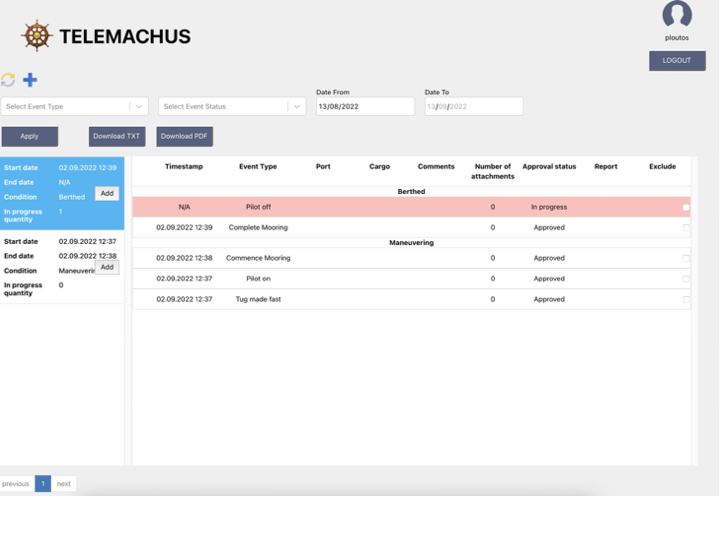
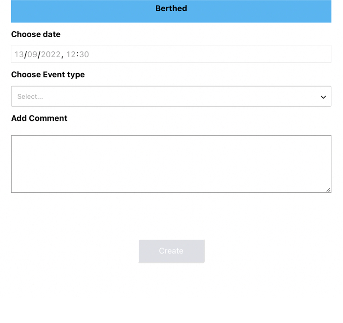
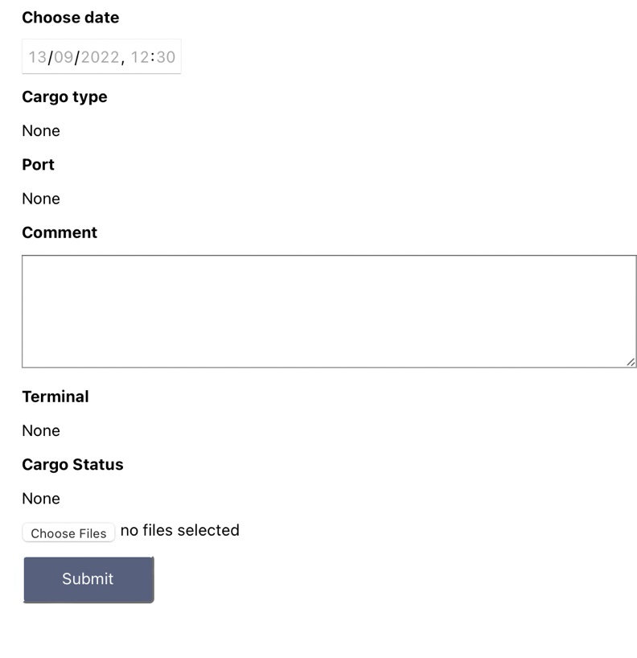
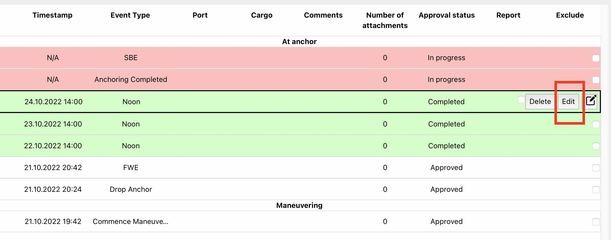
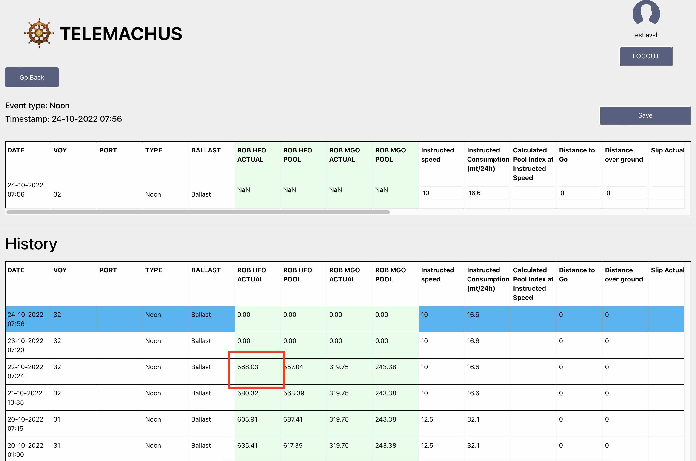
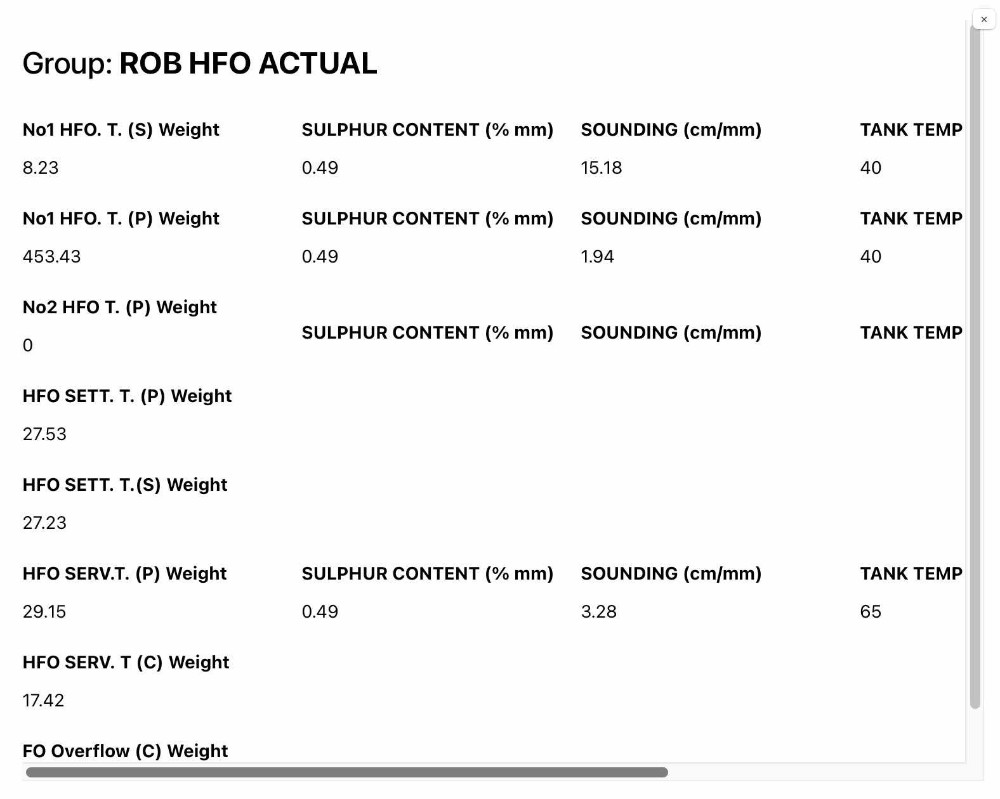
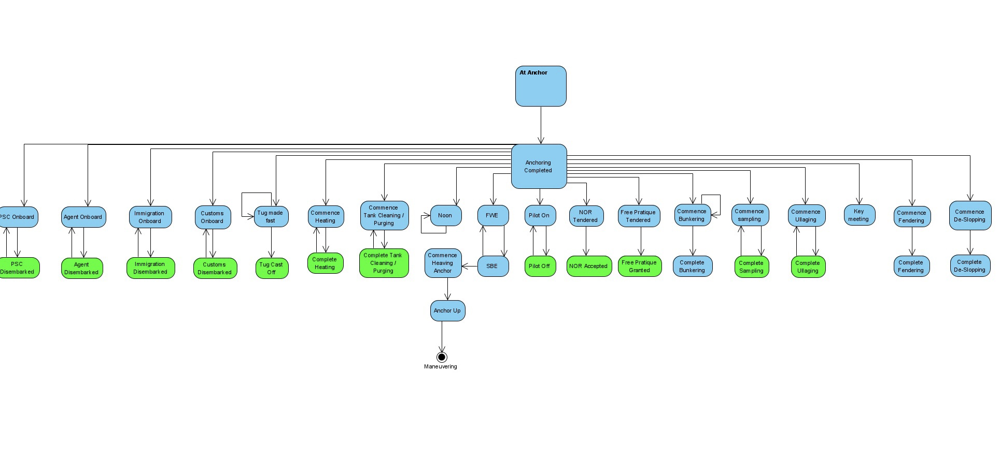

TELEMACHUS STATEMENT OF FACTS MANUAL
Main screen - List of submitted facts

1. The user sees a list of all submitted facts, sorted by time and grouped by their condition.
2. For each fact, its timestamp is also shown along with other information ("Port", "Cargo", "Comments", "Number of Attachments", "Approval Status", "Report" column, "Exclude" checkbox).
3. For each condition, two timestamps are shown ("Start date" and "End date") which are determined by the first and last fact inside this condition.
4. The facts can be either "Completed" or "In progress" (the latter is shown with red highlight). This does not have to do with approval status. It just means that the fact's details have not been fully completed.
5. Conditions can be either "Completed" or "In progress" too, and this depends on if all contained facts have been completed. In this case, a number is shown to indicate how many facts are pending completion.
6. Various search filters are available.
7. From this screen, the user is able to export the Statement of Facts, either as a txt file or a pdf file. In both cases, facts that have the "Exclude" checkbox checked are not included.
Create new fact

1. The user can create a new fact by clicking the "Create" button with the big "Plus" sign, on the main screen. (Note: Users create only facts. Condition groupings are created automatically by the system.)
2. Creation takes place on a separate screen, which is a pop-up window. This screen contains the timestamp and a drop-down list with all the applicable facts for this specific condition. See the appendix for the diagrams that show all acceptable fact progressions.
3. The new fact is placed last on the list (latest). This means that it will be created inside the current condition, or as the first fact of a newly opened (by the system) condition. Its timestamp is initially empty and must be filled in by the user. The timestamp is the only required field during the fact's creation.
4. When creating certain facts, the system automatically creates a paired fact. For example, when creating the "Commence Mooring" fact, the system automatically creates the "Complete Mooring" fact. Both facts will have empty timestamps. The user is only required to fill in the first timestamp at this time. If the second fact is a condition-closing one, this closing will happen only after the second fact's timestamp has been filled in.
Edit existing fact

1. After creating facts and completing their timestamp, users can edit them. This can happen in two ways: either by right-clicking the fact and choosing "Edit event" from the pop-up menu, or by first clicking the fact and then clicking the "Edit" (pencil) button of the fact.
2. Editing happens on a separate screen, which is a pop-up window.
3. The following fact properties can be edited:
a. Timestamp
b. Port (drop-down list)
c. Cargo
d. Comments (free text)
e. Terminal
f. Cargo status
g. Add/remove attachments
Reports
The user can add reports to a fact by clicking on the fact to select it, and then clicking the "Edit" button:

The report screen shows the current report record, plus all historical data in spreadsheet format. It looks like the below:

The values in the green cells are "composite" numbers, meaning that they are a result of detail records. To see those records, click on a green cell and you are redirected to the "Tank Analysis" screen:

Appendix - Fact diagrams
